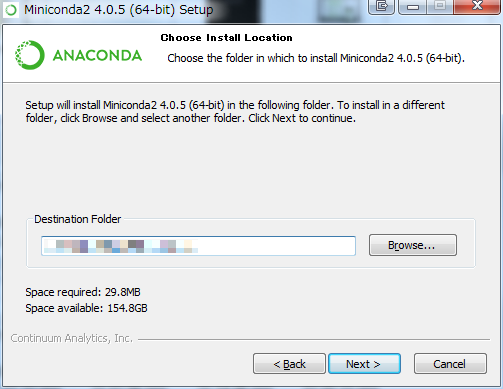
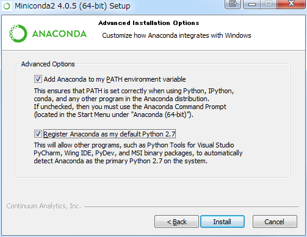
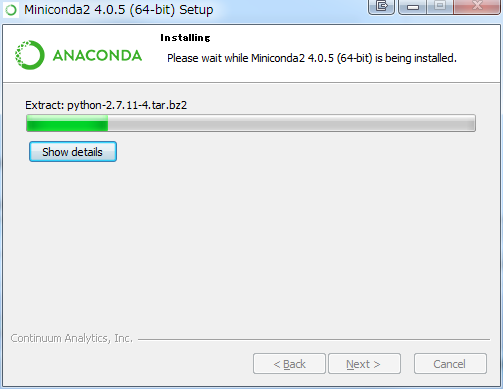

結構前にUbuntuにCaffeをインストールしました。
Windows版がある!!
会社でWindows上で動作するDeepLearning環境はないか？という質問を受けて、調べることになりました。 その過程でCaffeがWindowsで動作するように、Microsoftがgithubで開発を行っていることを知りました。

CNTKがあるのに、Caffe?って思いましたが、Windowsシステムに開発者を集めるための一環としては、既にDeepLearningの世界ではそれなりの地位があるCaffeを使えるようにすることは非常に意義があるでしょう。 Windows向けのCaffeは個人デベロッパーがWindows向けにCaffeｗフォークして開発していました。

個人ではなく、巨大組織が開発にコミットするのは非常に心強いです。 (上述の個人フォークは一年前に開発が止まっています。)
インストール
マニュアルがあるので、それを見ながらインストールしていきます。 トップページにあります。 CNTKのインストールといくつかかぶっていますのでサクサク行きましょう。
ソースコード
Githubからクローンします。 コマンドでもいいですし、TortoiseGitやSourceTreeのようなGUIクライアントでも良いです。
設定ファイルの準備
ビルドに必要な設定ファイルです。 クローンしたフォルダを **<caffe_root>**として、下記のコマンドを実行します。 [code lang=”cmd”] copy <caffe_root>\windows\CommonSettings.props.example caffe_path>\windows\CommonSettings.props [/code]
CUDA
7.5をインストールします。
環境に応じたインストーラをダウンロードしてください。
NVIDIA CUDA Deep Neural Network library (cuDNN)
cuDNN v3またはcuDNN v4をインストールします。 ダウンロードのために、事前に登録しておく必要があります。登録はすぐにできるわけではないので、余裕を持って行っておきましょう。
CUDAインストール後、環境変数CUDA_PATHが設定されますが、そこにcuDNNをコピーします。 または、CommonSettings.propsの24行目にあるCuDnnPath ノードにcuDNNへのパスを追記します。 展開したzipの構成が、D:\Works\Lib\NVIDIA\cudnn-4.0\cuda\binのようになっているなら、下記のようになります。 D:\Works\Lib\NVIDIA\cudnn-4.0 また、cuDNNを無効にすることもできます。CommonSettings.props内のUseCuDNN ノードのtrueをfalseに変更します。 下記のようになります。 [code lang=”xhtml”]
Python
まず、Caffe Python ラッパーをビルドするために、CommonSettings.props内のPythonSupportノードのfalseをtrueに変更します。 下記のようになります。 [code lang=”xhtml”]
{kind=link}
インストーラ初期画面
{kind=link}
ライセンス
{kind=link}
インストール先
マニュアルにはAll Userと書いてありますが、特に気にする必要はないでしょう。 
{kind=link}
インストール先ディレクトリ指定
お好みの場所に。 
{kind=link}
オプション
環境変数への追加は必須なので、最初のオプションはチェックします。 2つめのオプションはなくても良いです。 
{kind=link}
インストール中
{kind=link}
{kind=link}
インストール完了
インストール完了後、Minicondaへのパスが環境変数PATHに追加されます。 さらに、PythonのインストールディレクトリをPythonDirノードに記述します。 これはgithubのマニュアルにも書いていないので注意です。デフォルトでC:\Miniconda2になっているので、そこにインストールしたなら気にする必要はありません。 [code lang=”xhtml”]
PythonPath環境変数に\Build\x64\Release\pycaffeへのパスを通す
\Build\x64\Release\pycaffe\caffeを\lib\site-packagesにコピー
個人的には、後者がおすすめです。環境変数を汚したくないので。 シンボリックリンクでも貼って、常にsite-packagesがcaffeフォルダを参照するようにしましょう。 コマンドは下記です。 [code lang=”cmd”] mklink \lib\site-packages\caffe \Build\x64\Release\pycaffe\caffe /D [/code]
MATLAB
MATLABを私は持っていませんので、マニュアルの説明だけです。 Caffe MATLAB ラッパーをビルドするために、CommonSettings.props内のMatlabSupportノードのfalseをtrueに変更します。 下記のようになります。 [code lang=”xhtml”]
MATLABの検索パスに生成したmatcaffeフォルダーを追加
\Build\x64\Releaseをパスに通す
を実行します。
ビルド
Visual Studio 2013でビルドします。 \windows\Caffe.slnを開いてビルドしましょう。 もしくは、下記のコマンドをコマンドプロンプトから実行することで、Visual Studioを立ち上げることなくビルドできます。 [code lang=”cmd”] cd \windows\Caffe.sln “C:\Program Files (x86)\MSBuild\12.0\Bin\amd64\MSBuild.exe” /p:Configuration=Release /p:Platform=”x64” Caffe.sln /t:clean /verbosity:quiet /nologo “C:\Program Files (x86)\MSBuild\12.0\Bin\amd64\MSBuild.exe” /p:Configuration=Release /p:Platform=”x64” Caffe.sln /t:rebuild /verbosity:quiet /nologo > Build.log [/code] かなり時間がかかります。 ビルド完了後、\Build\x64\Releaseにcaffe.exeが生成されています。 ビルド終了後も生成されていない場合は、Build.logを確認して、エラーに対処してください。 ちなみに、caffeには様々な依存ライブラリ (boost、glog、hdf5、LevelDB、OpenCV等) がありますが、それらの依存関係はNuGetで解決しています。
まとめ
環境構築が終わりましたので、次回はモデルを使用して、学習をしてみたいと思います。